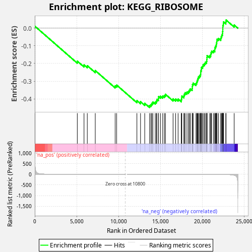
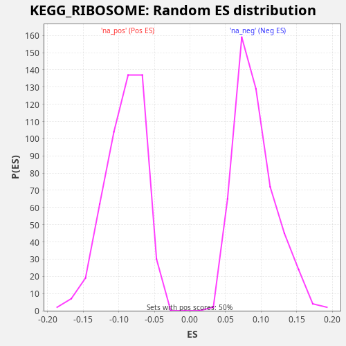

| Dataset | LabCL |
| Phenotype | NoPhenotypeAvailable |
| Upregulated in class | na_neg |
| GeneSet | KEGG_RIBOSOME |
| Enrichment Score (ES) | -0.44926384 |
| Normalized Enrichment Score (NES) | -4.875214 |
| Nominal p-value | 0.0 |
| FDR q-value | 0.0 |
| FWER p-Value | 0.0 |

| SYMBOL | RANK IN GENE LIST | RANK METRIC SCORE | RUNNING ES | CORE ENRICHMENT | |
|---|---|---|---|---|---|
| 1 | RPS4Y1 | 5 | 687.346 | 0.0116 | No |
| 2 | RPLP2 | 5077 | 0.267 | -0.1866 | No |
| 3 | RPL36AL | 5880 | 0.154 | -0.2080 | No |
| 4 | FAU | 6271 | 0.119 | -0.2124 | No |
| 5 | MRPL13 | 7222 | 0.059 | -0.2399 | No |
| 6 | RPL26L1 | 9598 | 0.004 | -0.3265 | No |
| 7 | RPL17 | 9778 | 0.003 | -0.3221 | No |
| 8 | RPL36A | 12195 | -0.003 | -0.4104 | No |
| 9 | RPL26 | 12626 | -0.007 | -0.4164 | No |
| 10 | RPL28 | 13128 | -0.013 | -0.4254 | No |
| 11 | RPL12 | 13706 | -0.022 | -0.4375 | Yes |
| 12 | RPS15A | 13868 | -0.026 | -0.4324 | Yes |
| 13 | RPL39 | 13977 | -0.029 | -0.4251 | Yes |
| 14 | RPL19 | 14098 | -0.032 | -0.4183 | Yes |
| 15 | RPL27 | 14387 | -0.040 | -0.4185 | Yes |
| 16 | RPL27A | 14521 | -0.044 | -0.4122 | Yes |
| 17 | RPL35 | 14580 | -0.046 | -0.4028 | Yes |
| 18 | RPL38 | 14768 | -0.053 | -0.3988 | Yes |
| 19 | RPS11 | 14777 | -0.053 | -0.3874 | Yes |
| 20 | RPL37 | 15005 | -0.062 | -0.3850 | Yes |
| 21 | RPS27L | 15274 | -0.072 | -0.3843 | Yes |
| 22 | RPL23A | 15473 | -0.082 | -0.3808 | Yes |
| 23 | RPS13 | 15601 | -0.089 | -0.3743 | Yes |
| 24 | RPS27 | 16511 | -0.145 | -0.4001 | Yes |
| 25 | RPS19 | 16821 | -0.169 | -0.4012 | Yes |
| 26 | RPL35A | 17112 | -0.197 | -0.4014 | Yes |
| 27 | RPL11 | 17491 | -0.241 | -0.4053 | Yes |
| 28 | RPL14 | 17527 | -0.245 | -0.3950 | Yes |
| 29 | RPS6 | 17556 | -0.249 | -0.3844 | Yes |
| 30 | RSL24D1 | 17804 | -0.282 | -0.3828 | Yes |
| 31 | RPL30 | 17862 | -0.289 | -0.3734 | Yes |
| 32 | RPL18 | 17948 | -0.301 | -0.3652 | Yes |
| 33 | RPL36 | 18166 | -0.334 | -0.3624 | Yes |
| 34 | UBA52 | 18343 | -0.368 | -0.3579 | Yes |
| 35 | RPL22L1 | 18464 | -0.390 | -0.3511 | Yes |
| 36 | RPS16 | 18565 | -0.409 | -0.3435 | Yes |
| 37 | RPS9 | 18794 | -0.457 | -0.3411 | Yes |
| 38 | RPS29 | 18816 | -0.461 | -0.3302 | Yes |
| 39 | RPS17 | 18830 | -0.464 | -0.3190 | Yes |
| 40 | RPL29 | 18914 | -0.486 | -0.3107 | Yes |
| 41 | RPL41 | 19248 | -0.578 | -0.3127 | Yes |
| 42 | RPS28 | 19339 | -0.606 | -0.3047 | Yes |
| 43 | RPS20 | 19391 | -0.623 | -0.2950 | Yes |
| 44 | RPLP1 | 19464 | -0.651 | -0.2862 | Yes |
| 45 | RPL21 | 19523 | -0.671 | -0.2769 | Yes |
| 46 | RPS21 | 19649 | -0.715 | -0.2703 | Yes |
| 47 | RPS10 | 19756 | -0.755 | -0.2629 | Yes |
| 48 | RPL13 | 19811 | -0.782 | -0.2534 | Yes |
| 49 | RPL10 | 19817 | -0.785 | -0.2418 | Yes |
| 50 | RPS15 | 19883 | -0.815 | -0.2327 | Yes |
| 51 | RPL7A | 19902 | -0.824 | -0.2217 | Yes |
| 52 | RPL23 | 20040 | -0.882 | -0.2156 | Yes |
| 53 | RPL32 | 20098 | -0.906 | -0.2062 | Yes |
| 54 | RPL6 | 20255 | -0.981 | -0.2009 | Yes |
| 55 | RPL13A | 20356 | -1.031 | -0.1933 | Yes |
| 56 | RPL22 | 20513 | -1.142 | -0.1880 | Yes |
| 57 | RPL24 | 20536 | -1.152 | -0.1771 | Yes |
| 58 | RPL31 | 20560 | -1.167 | -0.1663 | Yes |
| 59 | RPS18 | 20573 | -1.177 | -0.1550 | Yes |
| 60 | RPS2 | 20890 | -1.413 | -0.1564 | Yes |
| 61 | RPL37A | 21005 | -1.535 | -0.1493 | Yes |
| 62 | RPLP0 | 21046 | -1.575 | -0.1392 | Yes |
| 63 | RPS5 | 21111 | -1.646 | -0.1301 | Yes |
| 64 | RPL15 | 21334 | -1.916 | -0.1275 | Yes |
| 65 | RPL8 | 21494 | -2.115 | -0.1223 | Yes |
| 66 | RPS3 | 21501 | -2.131 | -0.1108 | Yes |
| 67 | RPSA | 21577 | -2.266 | -0.1022 | Yes |
| 68 | RPL10A | 21665 | -2.424 | -0.0940 | Yes |
| 69 | RPL7 | 21694 | -2.474 | -0.0834 | Yes |
| 70 | RPL4 | 21733 | -2.562 | -0.0732 | Yes |
| 71 | RPS26 | 21765 | -2.618 | -0.0627 | Yes |
| 72 | RPL34 | 21937 | -3.016 | -0.0580 | Yes |
| 73 | RPS27A | 22205 | -3.884 | -0.0573 | Yes |
| 74 | RPL18A | 22265 | -4.123 | -0.0480 | Yes |
| 75 | RPS12 | 22329 | -4.440 | -0.0388 | Yes |
| 76 | RPS23 | 22410 | -4.802 | -0.0304 | Yes |
| 77 | RPS3A | 22424 | -4.908 | -0.0192 | Yes |
| 78 | RPL3 | 22448 | -5.076 | -0.0083 | Yes |
| 79 | RPS24 | 22452 | -5.092 | 0.0033 | Yes |
| 80 | RPS4X | 22456 | -5.114 | 0.0149 | Yes |
| 81 | RPL9 | 22517 | -5.452 | 0.0242 | Yes |
| 82 | RPS8 | 22532 | -5.614 | 0.0354 | Yes |
| 83 | RPS25 | 22811 | -7.723 | 0.0357 | Yes |
| 84 | RPS7 | 22840 | -8.018 | 0.0463 | Yes |
| 85 | RPL5 | 23808 | -41.996 | 0.0180 | Yes |

{kind=link}
{kind=link}